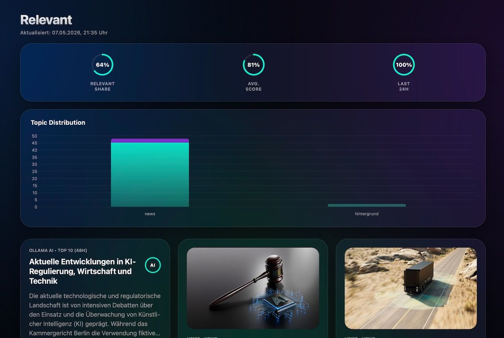

Software
Relevant News Feed

A fully automated, ML-curated news aggregator. It crawls tech sources, scores relevance, and generates summaries with a local LLM.
Software

A fully automated, ML-curated news aggregator. It crawls tech sources, scores relevance, and generates summaries with a local LLM.